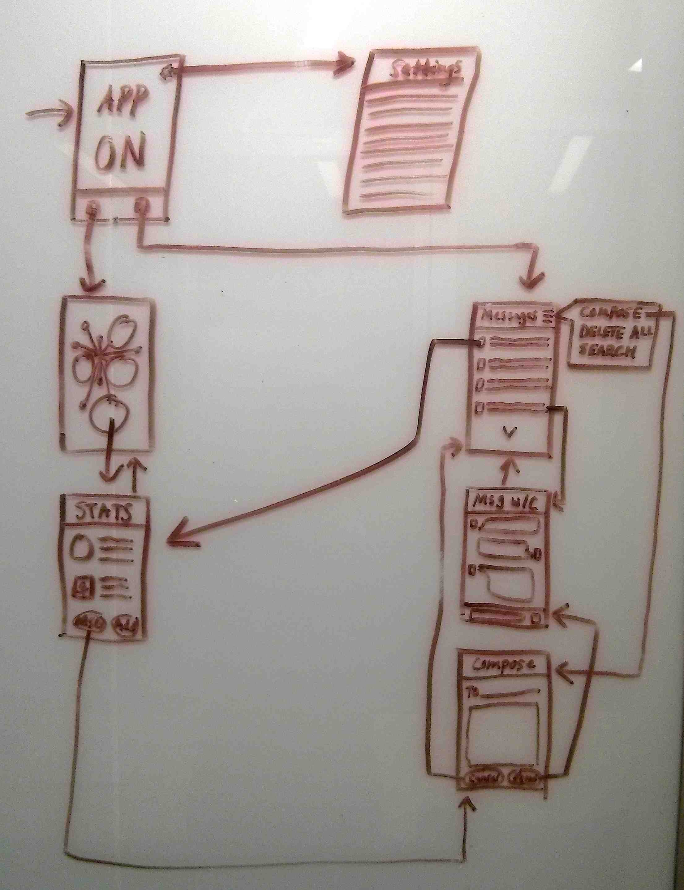

Chance App
A mobile app designed for bike commuters who are looking for relationships and perhaps love, but don't have time to stop while commuting.

Details
Skills
Domain Research
Interviewing
Personas+Scenarios
Wireframing
Prototyping
Pitching
Tools
Whiteboarding
Adobe Illustrator
Keynote
Duration
Mar 2014
Overview
Bike commuters often have meaningful yet ephemeral interactions with other cyclists. Although these could lead to friendship or more, they most often do not. There is no safe shared space for bike commuters to easily connect with others on their path - you can't just pull over when you are en route to work or a class. That's why we designed Chance - an app for cyclists who want to connect to others who share common interests, and just might be on each other's path.
Outcome
After guerilla research and interviewing bike commuters, we brainstormed all kinds of crazy ideas, but had the insight that we could help bike-commuters strengthen the ephemeral relationships they make with other bikers on their bike rides.
We then designed an app that tracks your path as you ride, and matches you with other bikers whose paths cross yours, even if you didn't realize they do. You can then see your matches based on your path intersections, and message people who you'd like to reach out to, maybe for a bike ride together.
Finnaly we brought all this work together in a deck and pitched our concept to our Interaction Design Studio class and professors.
My Contributions
- Principle interviewer: I made sure our ideas and personas addressed what I had seen and heard in interviews.
- Brainstorming sessions facilitator to both record all our ideas and keep the ball rolling.
- Paper prototyper and and wireframer for the app.
- Presentation designer and illustrator for our scenarios.
- Pitch presenter and question fielder to clarify app for faculty and peers.
Process Work
We created a user persona from research to set the focus for the app.
We iterated over several user flows and wireframes for an intuitive expereince.
We created design specs for Chance to make any future handover to development easier.
We developed multiple scenarios to demonstrate how the app works.
Sample Scenario Steps:
- Adriana opens the app, sees a list of potential dates, and taps on Thomas’ picture.
- She views the map that shows the areas (in yellow) where they both bike during their daily rides.
- She views his full profile. He seems interesting, so she thinks she’ll message him.
- She swipes upward to bring up the message window.